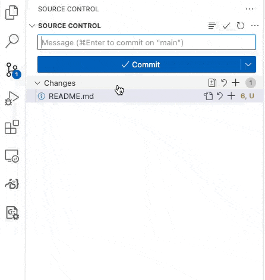

Lab 01: Control Structures

Objectives:
- Practice using for loops, while loops, and if statements.
- Practice creating functions and passing parameters.
- Practice Committing and Syncing often to GitHub to run autograding tests.
Step 0. Prepare
- Click this link and then “Accept this assignment”.
- Wait a few seconds and refresh the page. Refresh until the page says “You’re ready to go!”. The page has a link to a github repo.
- Click the link to see your new repo on github.com.
- Click the green Code button and copy the SSH link it shows.
- In a terminal,
cdto the directory where you are putting all your CS112 assignments.- type
git clone <paste-the-contents-of-the-link-you-copied>
cdto the new directory containing your repo.- type
code .to start up Visual Studio Code in that directory. - Make sure yo and your partner are in the same Team when creating the repo.
- Inspect the code you got in the assignment.
- In the terminal, type
make - The code should compile and give you an executable called tester.
- Run the program: type
./tester - You should get some basic output – or at least it should not crash.
Step 1. if statement practice, 1
In functions.cpp in the grade() function, add code that 1. prints “Enter your grade:” 2. reads in an unsigned value from the user 3. computes whether the letter grade (a char) is an A, B, C, D, or F. An A is 90 or above, a B is 80 - 89, etc. 4. prints out the grade saying “Your grade is grade.”.
Compile your program by typing make in a terminal. Run it by typing ./tester step1. Verify that your output looks exactly like this:
Your grade is B.Now, Commit and Sync your code to github. Use “step 1 complete” as your Message. When you Commit and Sync, the automated tests will run on github. Only the “step1” test should pass at this time. If it doesn’t, fix your code, and then resubmit (use any Message you want). Repeat until the “step1” test passes.

Step 2. if statement practice, 2
Add code in functions.cpp in insurance() to implement the insurance plan shown in the table below, computing the result in as few lines as possible – but still using readable/hospitable code. To review the syntax of if statements in C++, you might find this useful: https://www.w3schools.com/cpp/cpp_conditions_elseif.asp
| Plan Name | Months | ||
|---|---|---|---|
| 1 | 2-6 | 7+ | |
| silver | $90 | $60 | $60 |
| gold | $90 | $70 | $35 |
The program first asks the user for the Plan Name – a string. Then, the program asks for the number of months – an unsigned. Then, the code uses a series of if statements to compute the cost – an unsigned – printing it out at the end. My implementation uses 2 if statements, 1 else if, and 2 else statements, not in that order. Part of my solution has an if-else pair embedded in another if/else body.
Finally, of course, your code prints out the results in nice English. Your output should match this output exactly. (Note the period at the end of the number at the end.)
The cost for your plan is $60.Compile your code and run:
./tester step2and3 -c step2The output should match the output above.
Now, Commit and Sync your code to github. Use “step 2 complete” as your “message”. When you submit the automated tests will run. Only the “step1” and “step2” tests should pass at this time. If they don’t, fix your code, and then resubmit. Repeat until the “step1” and “step2” tests pass.
Step 3. while loop practice
Improve your code from Step 2 by adding a while loop that checks if the user entered a legal plan name (“silver” or “gold”), and if not tells the user to try again. E.g.,
Enter a plan name: maroon
I'm sorry, "maroon" is not a known plan.
Enter a plan name: sliver
I'm sorry, "sliver" is not a known plan.
Enter a plan name: gold
... code goes on now ...The while loop repeats until the user enters either silver or gold.
Compile your code and run:
./tester step2and3 -c step3The output should match the output above.
Now, Commit and Sync your code to github. Make sure the first 3 tests pass.
Step 4. switch statement
Now, write in code in vowel() that asks the user to enter a single lowercase letter. Your code must use a switch statement to test if the letter is a vowel or consonant. Vowels are ‘a’, ‘e’, ‘i’, ‘o’, and ‘u’. We’ll call ‘y’ a consonant for this exercise.
Use default in your switch statement for the “consonant” case.
Have your code produce output like this:
The letter is a vowel.or
The letter is a consonant.Compile your code and run:
./tester step4The output should match the output above.
Now, Commit and Sync your code to github. Make sure the first 4 tests pass.
Step 5. for loop, 1
Now, write code in sevens():
- create an array of unsigned of size 8 called values
- a for loop to initialize the values array to 0, 7, 14, 21, …
- a series of assert statements to check that the 0th value is 0, 3rd value is 21, and 7th value is 49.
- A line to print out “All tests passed!”
- You may have to
#include <cassert>
Test with:
./tester step5Now, Commit and Sync your code to github. Make sure the appropriate tests pass.
Step 6. for loop, 2
Now, write code in sum():
- create an array of doubles, of size 100.
- write a for loop to fill in the array with the values 0.0, 0.1, 0.2, 0.3, etc.
- write a for loop to sum up all the values in the array – but this loop has to iterate from the last item down to the first.
Make the loop variable be of type int, not unsigned, as this variable will be decremented down to -1, which cannot be represented by an unsigned.
- print out the resulting sum
Test with:
./tester step6Now, Commit and Sync your code to github. Make sure the appropriate tests pass.
Step 7. defining a function
Now, write code to:
- implement a function called
getPlan()and move your code from Step 3 above into it. The function returns the string (“silver” or “gold”) that the user enters. This function (and the ones in the next steps) is again in functions.cpp and functions.h. - move the code that gets the number of months from the user into a function called
getMonths(). This function returns the number of months a user enters. Note that the prompt asking the user to enter the number of months should read something nice, like this:
Enter the number of months: - move the code that computes the cost into a function called
computeCost(). This function takes the plan name and the months as arguments and returns the cost. - Uncomment and study step7 of tests.cpp. The code just does 4 things: call
getPlan(), callgetMonths(), callcomputeCost(), and print out the cost. Anyone who looks at that code will understand it because the code is short and uses good function names.
Test with:
./tester step7Run the test multiple times with various inputs to make sure the computation is correct.
Now, Commit and Sync your code to github. Make sure all tests pass.
Grading Rubric
This lab is worth 16 pts:
- 2 points for each of the 7 steps
- 1 pt: output is correct and
- 1 pt: you followed the directions
- 2 pt for perfect indentation and good variable names, function names, and comments (i.e., hospitable code). You should write a comment in your code only when the following block of code is not obvious to the trained reader. You should not write a comment for each line of code.
Ways students have lost points in the past:
- -1: no output for step7
- -1: you didn’t init step 5 with a for loop
- -1: step6 should be 495
- -0.5: step1 you should use elseif not nested elses
- -0.5: part4 the inside of each case should be indented